Midterm Study Guide Answers
Disclaimer: These answers were created by humans. If you find any errors in them, or even suspect an error, please let your instructor know for your own sake, and for the benefit of your colleagues.
These are not complete solutions. Remember that you will need to show steps when carrying out row reductions and justify your answers.
1. (a)
| (i)
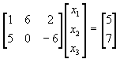 |
(ii)
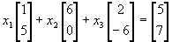 |
| (iii)
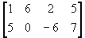 |
(iv) The solution is
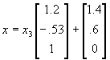 |
| (i) | (ii)
|
| (iii) | (iv) The solution is x = |

2.
| (a)
~ Since there is not a pivot in every row when the matrix is row reduced, then the columns of the matrix will not span R3. Note that there is not a pivot in every column of the
matrix.
So, when augmented to be a homogenous system, there will be a free
variable
(x3), and the system will have a nontrivial solution. So, the
columns
of the matrix are linearly dependent. |
(b)
~ Since there is a pivot in every row when the matrix is row reduced, then the columns of the matrix will span R3. Note that there is not a pivot in every column of the matrix. So, when augmented to be a homogenous system, there will be a free variable (x4), and the system will have a nontrivial solution. Thus, the columns of the matrix are linearly dependent. It is also possible to see that there will be a free variable since there are more vectors than entries in each vector. |
| (c)
Since there are only two vectors, it is not possible to
span R4.
Consider the 4 x 2 matrix. It would not be possible to have a
pivot
in every row when the matrix is row reduced. |
(d)
~ Since there is a pivot in every row when the matrix is row reduced, then the columns of the matrix will span R2. Note that there is not a pivot in every column of the matrix. So, when augmented to be a homogenous system, there will be a free variable (x3), and the system will have a nontrivial solution. So, the columns of the matrix are linearly dependent. Again, it is also possible to see that there will be a free variable, since there are more vectors than entries in each vector. |
| (e)
The vectors do not span R2. You can consider the 2 x 2 matrix. When row reduced, there will not be a pivot in every row. Since the zero vector is in the set, the vectors are not
linearly independent.
(There is no pivot in that column.)
|
(f)
Since there are only two vectors, and the vectors are not multiples of each other, then the vectors are linearly independent. Thus, there will be a pivot in every column when the 2 x 2 matrix is row reduced. Since it is known that there are 2 pivots for this 2 x 2
matrix (because
there is one in each column), then we know that there is a pivot in
every
row (since there are two rows). Thus, the vectors span R2.
|
| (a) Echelon form:
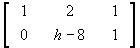 (i) There is no solution if h = 8. |
(b) Echelon form:
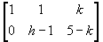 (i) There is no solution if h – 1 = 0 and 5 – k
is not
zero, so no solution if h = 1 and k is not 5. |
| (a) Echelon form:
The vector v3 is in the Span {v1, v2} as long as the system is consistent, so we need h - 35 = 0 so h = 35. Also, for the vectors to be linearly dependent, the system would need a free variable. So {v1, v2, v3} is linearly dependent if h = 35. |
(b) Echelon form:
The vector v3 is in the Span {v1, v2} as long as the system is consistent, and this system is consistent for all h. Also, {v1, v2, v3} is linearly dependent for all h. |
| (a) Echelon form:
This system is consistent when h = 12. Note: The solution would not be unique. |
(b) Echelon form:
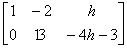 This system is consistent for all h. Note: The solution is unique. |
(c) Echelon form:
Consistent when h is not equal to -14. Note: The solution would be unique. |
6.
(a) A must have 4 pivots in order for its columns to be linearly
independent (a pivot in every column).
(b) No, each column vector of A is in R7, so the
vectors
are not even in R4 . So, pivots have nothing to do
with
it. The vectors are not in the space, much less able to span
it.
(c) No, the columns of A will not span R7 .
If there are 7 pivots (a pivot in every row), then A will span R7 .
However, since A has only 4 columns, it is not possible to have more
than
4 pivots.
7.
(a) The columns of B are linearly dependent regardless of the
number of pivots.
B must have 8 pivots in order for its columns to be linearly
independent
(a pivot in every column). However, it is not possible for this
to
happen, since there are only 5 rows. Since it is not possible to
have a pivot in every column, it is not possible for the columns of B
to
form a linearly independent set.
(b) Yes, the columns of B will span R5 if there are 5 pivots
(a pivot in every row).
(c) No, each column vector of B is in R5, so the
vectors
are not even in R8. So, pivots have nothing to do with
it. The vectors are not in the space, much less able to span
it.
8. For x1v1+ x2v2 + x3v3 + x4v4 + x5v5 = 0, it is possible to have a nontrivial solution.
For instance, x1= x2 = x4
= x5 = 0 and x3 = 1 is a
nontrivial
solution to this equation.
Since x1v1+ x2v2
+ x3v3 + x4v4
+ x5v5 = 0 does not have only the trivial
solution, then the vectors v1, v2,
v3, v4, v5
form a linearly dependent set.
Or, if you augment v1, v2,
v3, v4, v5and
the zero vector to form a matrix, that matrix can not have a pivot in
the
third column since the third column is all zeros. Thus the system will
have a free variable so the columns of the matrix are linearly
dependent.
| 9. (a) Reduced echelon form:
The solution is x = . (Trivial Solution) |
(b) Reduced echelon form:
The solution is x = (Trivial Solution) |
| (c) Reduced echelon form: | The solution is
(Nontrivial Solution) |
| (a) Augment and reduce to reduced echelon form:
~ This represents a consistent system. The solution is x = . Since there are free variables, the solution is not
unique. |
|
| (b) Augment and reduce to reduced echelon form:
~ |
|
| (c)
~ |
|
| (d)
~ Homogeneous systems are always consistent. This system
has a free variable,
so there are nontrivial solutions: x =
. |
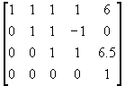
The last row leads to a contradiction, 0 = 1. No solution is possible, so the system is inconsistent.
12. (a) Echelon (b) Echelon (c) Reduced echelon (d) Neither
13.
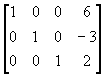
14. This matrix is already in reduced echelon form. The general solution:
x1 = 2x2 - 2
x2 is free
x3 = 6
x4 = 1
| 15. (a) Yes. An echelon form of A is
so the system has a solution. We can find weights that allow us to write b as a linear combination of A’s columns. |
(b) No. An echelon form of A is
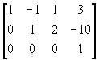. there is a contradiction in the last row, 0 = 1. So the system has no solution. We cannot find weights that allow us to write b as a linear combination of A’s columns. |

16. Augment [ v1 v3 v2] and reduce to reduced echelon form:
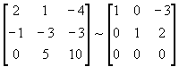
This system is consistent so v2 is in span{v1, v3}with c1 = -3 and c3 = 2. This allows us to write v2 as a linear combination of v1 and v3: v2 = c1v1 + c3v3 = -3v1 + 2v3, or,
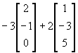.
17. 0v1+ v2 + 0v3
+ 0v4 + 0v5 = v2,
so v2 is a linear combination of the vectors v1,
v2, v3, v4,
v5
. This is equivalent to saying that v2 is in
Span
{v1, v2, v3, v4,
v5}
| 18. (a)
Ab = 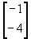 |
(b)
Ab is undefined, since A is 2X3 and b is 2X1. |
19. Lots of options for this. Here are five of them:
<>0v1 + 0v2 = 0 = (0, 0, 0, 0)1v1 + 0v2 = v1 = (5, 0, -1, 3)
0v1 + 3v2 = 3v2 = (0, 12, 6, 3)
1v1 + 1v2 = (5, 4, 1, 4)
3v1 - 2v2 = (15, 0, -3, 9) - (0, 8, 4, 2) = (15, -8, -7, 7)
20. Augment A with b and reduce to reduced echelon form:
~ So, x = , and x is unique.
21.
(a) Since T is a mapping from R2 into R7 by the
rule T(x) = Ax, then T acts upon an
arbitrary
vector x in R2 and transforms it into a vector in R7.
Thus, x is 2 x 1 and Ax is 7 x 1. In order for the
matrix multiplication to be defined, A must have 2
columns.
Since the resulting vector is 7 x 1, then A must have 7
rows.
Thus, A must be a 7 x 2 matrix.
(b) Since T is a mapping from R4 into R3 by the rule T(x) = Ax, then T acts upon an arbitrary vector x in R4 and transforms it into a vector in R3. Thus, x is 4 x 1 and Ax is 3 x 1. In order for the matrix multiplication to be defined, A must have 4 columns. Since the resulting vector is 3 x 1, then A must have 3 rows. Thus, A must be a 3 x 4 matrix.
22. Augment A with the zero vector and reduce to reduced echelon form:
~ so x =
23.
(a) x1v + x2w + x3z
= [v w z] = Ax so A =
= Ax so A =
(b)
T(u) = Au = 
24.
T(x) = Ax = [ T(e1) T(e2) T(e3) ] =
=
| 25. The standard matrix is
A = [ T(e1) T(e2) ] = |
26. The standard matrix is
A = . |
27. The standard matrix is
A = 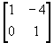. |
 .
.| 28.
(a)When A is row reduced, there is not a pivot in every row. So, the columns of A do not span R4. Thus, T does not map R3 onto R4. (b)When A is row reduced, there is a pivot in every column, so the columns of A are linearly independent.Thus, T is one-to-one. |
29.
(a)Since A has a pivot in every row, the columns of A span R3; thus, T maps R3 onto R3. (b) Since A has a pivot in every column, the columns of A are linearly independent; thus, T is a one-to-one mapping. |